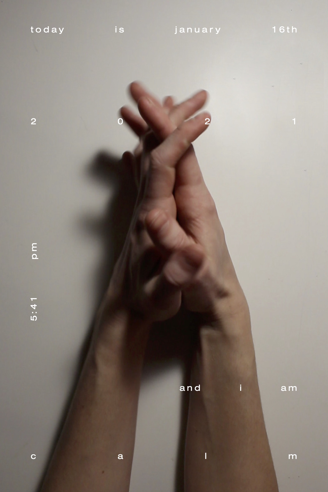

Pandemic Posters
A series of posters created during the COVID-19 pandemic.
These are a select few pieces from a series called Pandemic Posters. This series became a weekly routine where I would design a poster based on what was going on during that particular week of my life during the pandemic. Many focus on mental health such as living with social anxiety and how to utilize breathing exercises.
24”x36” Created in Photoshop, Illustrator, Indesign, Procreate, along with other mixed media
4-7-8

AND I AM CALM
REMINISCING

SOCIAL ANXIETY

APPRECIATE

ALUMNI PANEL DISCUSSION

CAFFEINE

MY WORKSPACE

I DO NOT WISH TO BE PERCEIVED